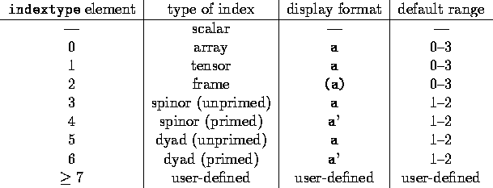

The structure of the objects' index is determined from the indextype list, a list of integers whose length is the number of indices that may be applied to the name (the rank of the object). Each integer element indicates the type of the corresponding index element, and the sign indicates whether it is covariant (negative) or contravariant (positive).

Table 2.1: Index types and display formats
Table 2.1 shows the allowed types of indices and the format in which the example index element a will be displayed. For example, the indextype list '(-1 -1) indicates a rank-2 tensor with covariant indices. Whenever it is necessary to display an index with the object, the indices are printed according to both their type and location. Frame indices are enclosed in parentheses, while primed spinor and dyad indices are followed by a prime mark '. User defined index-types can be declared with the function defindextype() (qv). Covariant indices (with negative indextype elements) are displayed on the line below the object name, while contravariant indices are displayed on the line above. If the REDUCE switch nat is off, then the index is displayed following the object name and enclosed in square brackets, and no formatting is done.
When an object containing a spinor or dyad index is made, a conjugate object is automatically created, having each spinor indextype element exchanged with the other spinor type (i.e. primed indices become unprimed, and unprimed indices become primed) as defined by the control variable conjugateindextypes!*. This conjugate object is given the name <name>_cnj and forms a coupled pair with the parent object. The printname (qv) is the same as the parent object, but a bar is printed over the name to indicate conjugation. See §6.2 for more about conjugation operations applied to spinor and dyad objects.
The first line of table 2.1 shows no indextype for a scalar object (a rank-0 object), the indextype in this case is the empty list '() or nil. An indexed scalar must have an empty index attached (i.e. []), it can only be non-empty if the first operator indicates differentiation. The index is printed as [] so as to indicate the indexed nature of the name. If <name> previously had an algebraic value this now becomes the indexed value of the scalar object. In general, an indexed scalar can be treated exactly as any other indexed object.
To create an object that is closely related to another is simplified by an extension to the above syntax. If an indexed object name is supplied instead of a list, the indextype parameter of that object is used to create the new object. If an indexed object name appears as an element in the index-type list, the indextype parameter of that object is inserted into the index-type list allowing the user to build objects of higher rank.
The indextype list is stored on the property list of <name> under the key indextype.